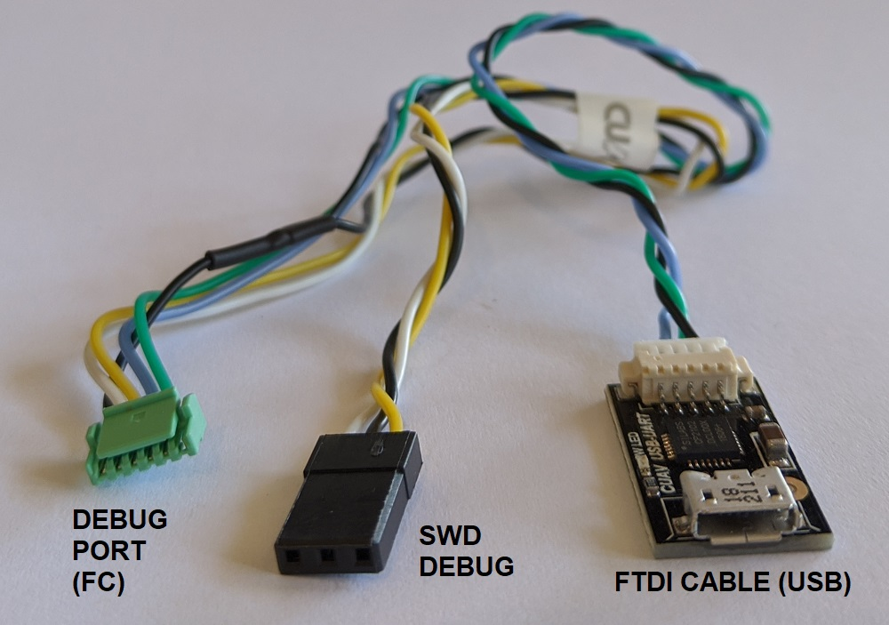
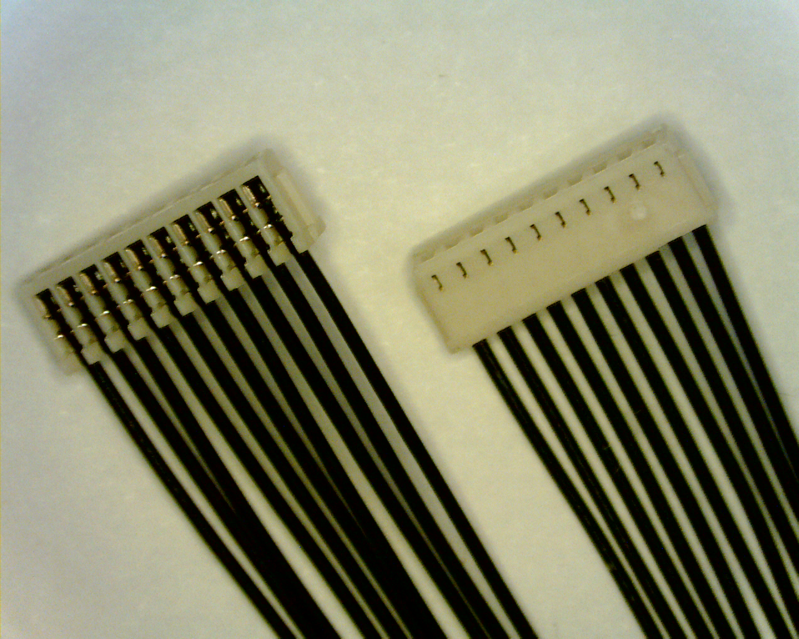
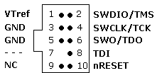

SWD (JTAG) 하드웨어 디버깅 인터페이스
PX4는 보통 ARM 칩의 직렬 회선 디버깅(SWD)을 지원하는 오토파일럿 조종 장치 하드웨어에서 실행합니다. SWD는 ARM 프로세서에서 JTAG 디버깅을 수행할 때 적은 수의 핀을 물리 인터페이스로 연결하는 방식입니다. SWD 호환 디버깅 프로브로 PX4의 중단점을 설정하고 실제 장치에서 코드 실행을 단계별로 진행할 때 활용할 수 있습니다.
SWD 인터페이스는 새 부트로더 또는 펌웨어를 완전히 깡통인 (USB 부트로더를 설치한 적이 없는) 보드에 추가할 때 사용할 수 있습니다.
이 주제에서는 다양한 보드로의 SWD 인터페이스 연결 방법(실제 디버깅 수행 방법은 관련 디버깅 주제에서 다룸)을 설명합니다.
SWD Interface Definition
SWD 인터페이스는 다음 핀으로 이루어져있습니다.
| 핀 | 신호 형식 | 설명 |
|---|---|---|
Vref |
출력 | 대상 참조 전압. 일부 JTAG 어댑터에는 SWD 라인에 전압을 설정할 때 Vref 전압이 필요합니다. 예를 들면, SEGGER J-Link Debug Probes 에서 Vref가 필요합니다. |
SWDIO |
입출력 | 단일 전이중 데이터 핀. |
SWCLK |
출력 | 클록 신호. |
GND |
- | 접지핀. |
SWD의 "일부"는 아니지만, 오토파일럿에서는 직렬 회선 출력 (SWO) 추적 출력 핀이 있습니다. 만약 이 핀이 있다면 이 핀도 연결해야합니다.
| 핀 | 신호 형식 | 설명 |
|---|---|---|
SWO |
출력 | 직렬 회선 출력 방식의 추적 출력 핀. 실시간 추적 데이터를 인가하려면 SWD도 연결해야 합니다. |
PX4 하드웨어로의 SWD 디버거 연결
디버깅 프루브의 SWDIO, SWCLK, GND 핀을 오토파일럿의 각 해당 핀으로 연결하십시오.
추가로:
- 디버깅 어댑터에서
VRef핀 연결이 필요하다면 연결하십시오. SWO핀이 있다면 연결하십시오.
일부 SWD 디버깅 프루브는 픽스호크 공용 디버깅 포트에 연결할 어댑터와 케이블이 딸려옵니다. 다른 보드 또는 프루브에 연결할 개별 케이블을 직접 만들 수도 있습니다.
일부 제조사에서는 SWD 인터페이스와 시스템 콘솔을 쉽게 연결하는 케이블을 제공합니다. 예로서, CUAV V5nano와 CUAV V5+에 디버깅 케이블이 들어있습니다: 
가능한 부분이 있다면, SWD/JTAG 디버거, 컴퓨터용 케이블을 별도로 만들기 보다는 어댑터 보드를 만들거나 구하는 방안을 권해드립니다. 디버깅 문제를 해결하려는 과정에서 입는 손해와 미흡한 결선 문제를 줄이는 과정에서, 다양하고 인기있는 비행체 제어 장치 보드에 연결할 공통 인터페이스를 제공하는 어댑터를 쓰시는 방안이 여러모로 이득입니다.
Autopilot Debug Ports
비행체 제어 장치는 보통 SWD 인터페이스와 시스템 콘솔을 노출하는 디버깅 포트를 제공합니다.
픽스호크 커넥터 표준에서는 이 포트의 표준 제정을 시도합니다. 그러나 여러 보드가 다른 핀 출력 또는 커넥터를 쓰기 때문에, 오토파일럿의 포트 위치와 핀 출력 정보의 문서상 확인을 추천드립니다.
오토파일럿 일부 하위 집합의 디버깅 포트 위치와 핀 출력은 아래와 같습니다.
| 오토파일럿 | 커넥터 |
|---|---|
| 3DR Pixhawk | ARM 10-pin JTAG 커넥터 (mRo Pixhawk, HobbyKing HKPilot32등의 FMUv2 보드에서도 사용함). |
| CUAV V5nano | 6-pin JST GH Digikey: BM06B-GHS-TBT(LF)(SN)(N) (수직 마운트), SM06B-GHS-TBT(LF)(SN)(N) (측면 마운트) |
| CUAV V5+ | 6-pin JST GH Digikey: BM06B-GHS-TBT(LF)(SN)(N) (수직 마운트), SM06B-GHS-TBT(LF)(SN)(N) (측면 마운트) |
| Drotek Pixhawk 3 Pro | Pixhawk 6-pin SH Debug |
| Holybro Pixhawk 4 | Pixhawk 6-pin SH Debug |
| Holybro Pixhawk 4 Mini | Pixhawk 6-pin SH Debug |
| Holybro Kakute F7 | 판 납땜 |
| Holybro Durandal | Pixhawk 6-pin SH Debug |
사용 중인 비행체 제어 장치가 없다면 오토파일럿 주제를 확인하십시오.
Pixhawk Standard Debug Ports
픽스호트 프로젝트에는 다양한 픽스호크 FMU 출시작에 대한 표준 핀 출력 및 커넥터 형식을 지정했습니다:
사용하고자 하는 포트를 확인하려면 개별 보드를 확인하십시오.
| FMU 버전 | 픽스호크 버전 | 디버그 인터페이스 |
|---|---|---|
| FMUv2 | Pixhawk / Pixhawk 1 | 10 pin ARM Debug |
| FMUv3 | Pixhawk 2 | 6 pin SUR Debug |
| FMUv4 | Pixhawk 3 | 6 pin SH Debug |
| FMUv5 | Pixhawk 4 FMUv5 | 6 pin SH Debug |
| FMUv5X | Pixhawk 5X | 10 pin SH Debug |
| FMUv6 | Pixhawk 6 | 10 pin SH Debug |
| FMUv6X | Pixhawk 6 | 10 pin SH Debug |
FMU와 픽스호크 버전은 FMUv5X 이후(에만) 동일하게 갑니다
Pixhawk Debug Mini (6-Pin SH Debug Port)
Pixhawk 커넥터 표준에서는 SWD 핀과 시스템 콘솔에 다 접근할 수 있는 6-Pin SH 디버깅 포트 를 정의합니다.
이 디버깅 코드는 FMUv4와 FMUv5에서 활용합니다.
핀 출력은 아래와 같습니다 (SWD 핀은 강조함):
| 디버깅 포트 | 핀 |
|---|---|
| 1 | Vtref |
| 2 | 콘솔 TX |
| 3 | 콘솔 RX |
| 4 | SWDIO |
| 5 | SWDCLK |
| 6 | GND |
디버깅 포트 정의에는 다음 결선 방법도 포함합니다(커넥터로 이어지는 보드):
| 디버깅 포트 | 핀 | 전압 |
|---|---|---|
| 패드 | 신호 | 볼트 |
| 1 | NRST (reset) | +3.3V |
| 2 | GPIO1 (여분의 GPIO) | +3.3V |
| 3 | GPIO1 (여분의 GPIO) | +3.3V |
6-pin JST SH 소켓을 사용합니다 - Digikey number: BM06B-SRSS-TBT(LF)(SN) (수직 마운트), SM06B-SRSS-TBT(LF)(SN)(측면 마운트).
이 같은 케이블로 디버깅 포트에 연결할 수 있습니다.

Pixhawk Debug Full (10-Pin SH Debug Port)
Pixhawk 커넥터 표준에서는 SWD 핀과 시스템 콘솔에 다 접근할 수 있는 10-Pin SH 디버깅 포트 를 정의합니다. 핵심적으로 Pixhawk 6-Pin SH 디버깅 포트 에서 커넥터로 납땜 대상을 옮겼으며, SWO 핀도 추가했습니다.
이 포트는 FMUv5x, FMUv6, FMUv6x에서 사용하도록 지정했습니다.
핀 출력은 아래와 같습니다 (SWD 핀은 강조함):
| 디버깅 포트 | 핀 |
|---|---|
| 1 | Vtref |
| 2 | 콘솔 TX |
| 3 | 콘솔 RX |
| 4 | SWDIO |
| 5 | SWDCLK |
| 6 | SWO |
| 7 | NFC GPIO |
| 8 | PH11 |
| 9 | nRST |
| 10 | GND |
10-pin JST SH 소켓을 사용합니다 - Digikey number: BM10B-SRSS-TB(LF)(SN) (수직 마운트), SM10B-SRSS-TB(LF)(SN) (측면 마운트).
이 같은 케이블로 디버깅 포트에 연결할 수 있습니다.

Debug Probes
다음 절에서는 PX4를 구동하는 오토파일럿에 연결할 일부 잘 알려진 디버깅 프루브 장비와 어댑터의 개요를 설명하겠습니다.
Segger JLink EDU Mini Debug Probe
Segger JLink EDU Mini는 값싸고 인기있는 SWD 디버깅 프루브입니다. 프루브 커넥터 핀 출력은 아래 그림과 같습니다(FTSH-105-01-F-DV-K같은 ARM 10-pin 미니 커넥터로 연결).

J-Link Edu Mini를 Pixhawk 6-Pin SH Debug Port에 핀별로 결선해서 연결하는 방법은 아래에 나와있습니다(참고로 - 표시는 SWD에 필요하지 않음을 나타냅니다).
| 디버깅 포트 | J-Link Mini |
|---|---|
| 1 (Vtref) | 1 |
| 2 (콘솔 TX) | - |
| 3 (콘솔 RX) | - |
| 4 (SWDIO) | 2 |
| 5 (SWDCLK) | 4 |
| 6 (GND) | 3 또는 5 |
상단 표를 보시면 오토파일럿 표준 포트에서 사용하지 않는 연결을 짐작하실 수 있습니다.
Dronecode Probe
드론코드 프루브는 ARM Cortex 기반으로 설계한 일반 JTAG/SWD + UART 콘솔 어댑터 호환 제품이며, 특히 픽스호크 계열 비행체 제어 장치(와 PX4 지원 기타 하드웨어)와 동작합니다.
프루브의 USB 인터페이스는 둘로 분리한 가상 직렬 포트 인터페이스가 나와있습니다. 하나는 시스템 콘솔(UART) 에 연결하는 용도, 다른 하나는 임베디드 GDB 서버에 연결(SWD 인터페이스)하는 용도입니다.
프루브에서는 Pixhawk 6-Pin SH 디버깅 포트에 연결하는 DCD-M 커넥터 케이블을 제공합니다.
6-pos DF13 프루브와 딸려오는 커넥터는 SWD 디버깅 용이 아닙니다(시스템 콘솔 연결용).
드론코드 프루브는 블랙매직 프루브를 기반으로 만들었습니다.
Black Magic Probe
블랙매직 프루브는 <0>드론코드 프루브와 매우 유사하나, 픽스호크 계열 비행체 제어 장치에 직접 연결하는 동일한 어댑터가 딸려오진 않습니다.
어댑터는 별매입니다:
- 드론 코드 디버깅 어댑터 (1 BIT 각 커넥터).
Next Steps
이제 SWD 디버깅 프루브를 비행체 제어 장치에 연결했습니다!
다음 주제에서는 온-타겟 디버깅 방법을 설명하도록 하겠습니다: